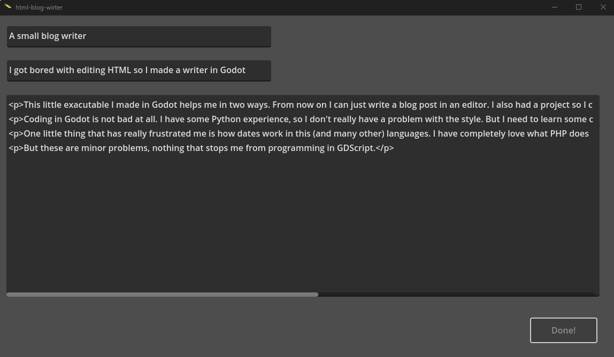

A small blog writer
by Ákos
This little exacutable I made in Godot helps me in two ways. From now on I can just write a blog post in an editor. I also had a project so I could practice the Godot engine.
Coding in Godot is not bad at all. I have some Python experience, so I don't really have a problem with the style. But I need to learn some concepts like signals.
One little thing that has really frustrated me is how dates work in this (and many other) languages. I have completely love what PHP does with the date() function. Meanwhile in GDscript I have to use string templating and a disctionary of date parts to do the same.
But these are minor problems, nothing that stops me from programming in GDScript.
